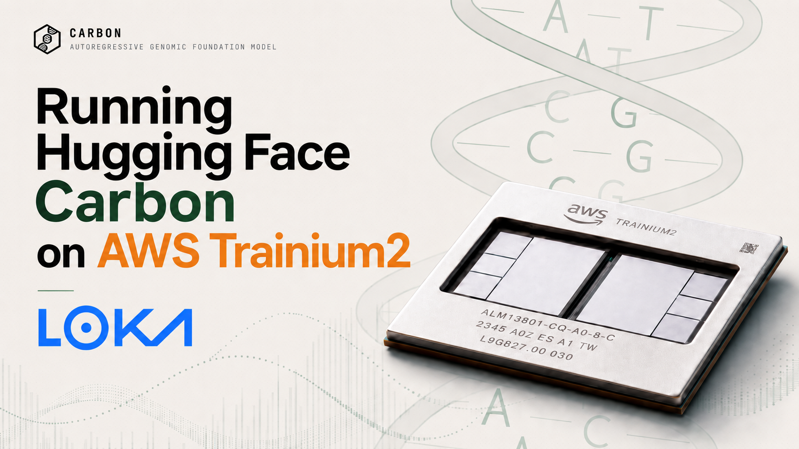

Running Hugging Face Carbon on AWS Trainium2 A first NxD Inference benchmark for open DNA foundation models


Introduction #
The Human Genome Project, completed in 2003, cost around $3 billion over 13 years to sequence the first human genome. Today, the sequencing bill is measured in hundreds of dollars. That changes the problem. For many bio and HCLS teams, the hard part is no longer getting enough sequence data. The hard part is turning that data into something useful: variant effect prediction, regulatory annotation, gene expression modeling, therapeutic sequence design, and repeated scoring runs that need to happen inside a secure cloud environment.
This is where DNA foundation models become interesting. The idea is simple enough: DNA is a sequence, and modern foundation models are extremely good at learning from sequences. Models such as HyenaDNA, the Nucleotide Transformer, and Evo2 showed that models trained on raw genomic sequence can learn useful biological representations without hand-built feature pipelines. But many of these releases also came with a practical catch: unusual architectures, closed or constrained access, large GPU requirements, or tokenization choices that make long-context inference expensive.
Carbon, released by Hugging Face Bio, is a very good step in the other direction. It is open, Apache 2.0, available in 500M, 3B, and 8B sizes, and trained on roughly six trillion base pairs of eukaryotic genomic DNA, mRNA transcripts, and bacterial genomes. It uses a 6-mer tokenizer, so six DNA bases become one model token, while Factorized Nucleotide Supervision keeps the training objective aware of base-level prediction. Carbon-3B is reported to match Evo2-7B on key DNA benchmarks while being smaller and much faster. For infrastructure teams, the biggest gift is even more practical: Carbon is built on a familiar Llama 3-style Transformer backbone.
That matters because a model card is not a production deployment. Bio teams usually want the model running inside an
AWS VPC, close to their data, with security and procurement teams comfortable with the path. They also need hardware
they can actually reserve. The A100-80GB reference used in the Carbon report is a strong baseline, but on AWS that
capacity is commonly exposed through larger nodes such as p4de.24xlarge. For a team that wants to test one
genomics model, that can mean reserving an 8-GPU node when the first workload does not need eight GPUs.
So when Carbon shipped, we tried the thing customers actually ask us about at Loka: can we take this fresh Hugging Face checkpoint and make it run on AWS-native accelerator infrastructure without turning the first experiment into a custom kernel project?
The answer was yes. On launch day, we ran Carbon-500M, Carbon-3B, and Carbon-8B on a single
trn2.3xlarge using NxD Inference:
one Trainium2 accelerator, 96 GB of accelerator memory, and a public Capacity Blocks rate of about
$2.23/hr, checked on May 21, 2026.
No model rewrite. No model-specific kernels.
A small tokenizer/config compatibility patch was enough for Carbon to ride the existing NxDI Llama causal path.
In the batch-16 sweep shaped after the Carbon technical report's A100 reference, Carbon-500M reached 18.83 kbp/s, Carbon-3B reached 11.00 kbp/s, and Carbon-8B reached 8.21 kbp/s. This is not a final service benchmark and it is not a biological evaluation. It is something more basic, and honestly more useful for executives: proof that the distance between an open model release and a production-shaped AWS serving artifact is getting shorter.
What makes Carbon different #
Why this section matters: Carbon is not “just another LLM for DNA.” It is open, it uses a familiar Llama-style backbone, and it adds the DNA-specific pieces where they actually matter: tokenization and training. That combination is what made a fast Trainium2 path possible.
The architecture is intentionally familiar: decoder-only autoregressive modeling, RMSNorm, SwiGLU, RoPE, GQA, and a Llama-style causal path. That is not the most exotic design choice, and that is the point. In enterprise AI, boring architecture is often a feature. It means the model has a better chance of working with the compilers, runtimes, profiling tools, and deployment patterns that customers already trust.
The DNA-specific part is the tokenizer. Carbon uses non-overlapping 6-mer tokenization, so six nucleotides become one model token. A 1080 base-pair input becomes roughly 180 DNA tokens in DNA mode. That compression is what makes long genomic spans more practical on a standard Transformer backbone. Instead of paying attention cost on every single base, the model can work over a shorter token sequence while still learning from nucleotide-level supervision during training.
The tradeoff is also worth being honest about. Single-base tokenization gives a cleaner interface, but it makes every sequence six times longer. Carbon takes the more deployment-friendly route: compact 6-mer tokens, plus Factorized Nucleotide Supervision to keep the model aware of base-level prediction. For this Trainium2 benchmark, we measured direct 6-mer generation. FNS base-pair-level inference is the next obvious follow-up because it would make the biological interface even cleaner.
This is the part we like the most about the release from Hugging Face Bio: Carbon is not only a benchmark result. It is a model family that infrastructure teams can actually touch. The weights are open, the model cards are public, the sizes are practical, and the architecture gives cloud teams a real shot at making it production-shaped without starting from a blank page.
The table below summarizes the three Carbon sizes we tested. The main deployment-relevant difference is not only parameter count, but also the attention shape: hidden size, layer count, attention heads, and KV heads all affect how cleanly the model maps onto tensor parallel inference.
| Model | Hidden | Layers | Attention heads | KV heads | Vocabulary |
|---|---|---|---|---|---|
| Carbon-500M | 1024 | 28 | 16 | 8 | 155,776 |
| Carbon-3B | 3072 | 30 | 32 | 4 | 155,776 |
| Carbon-8B | 4096 | 32 | 32 | 8 | 155,776 |
Why Trainium2 #
Bio workloads are not chat workloads with a lab label on top. They often involve private sequence data, long context, repeated scoring, likelihood comparisons, perturbation sweeps, and compliance constraints. Cost matters, but so do data locality, procurement shape, security review, and the ability to keep the model in the same AWS environment where the rest of the platform already runs.
This is where AWS Trainium2 deserves real praise. It gives teams an AWS-native accelerator option that is purpose-built for deep learning, starts at a practical one-chip instance size, and scales to larger Trn2 fleets when the workload is proven. For customers already building on AWS, that is not a small detail. It means the accelerator strategy can fit the cloud strategy instead of forcing a separate GPU-only operating model from day one.
Why Trainium2 matters here: the value is not only lower cost. The value is having an AWS-native accelerator path that starts small, stays inside the customer environment, and can scale when the workload is real.
Carbon was a good test case because it is not a generic chat model, but it is shaped like one. Its configs advertise
LlamaForCausalLM. NxD Inference already has a strong Llama causal path. The bet was simple: if the tokenizer
and model config cooperate, Carbon should be able to use the existing NxDI path.
At Loka, this is the question we hear whenever a serious open model ships: not only “is the model good?”, but “how fast can we stand it up on infrastructure we already operate, at a cost we can explain to procurement?” Carbon gave us a clean way to answer that question on real Trainium2 hardware.
The timing also fits the broader AWS BioFM story. In April 2026, AWS published a multimodal biological foundation-model overview that describes BioFM adoption as a combination of model development, governed biological data, scalable infrastructure, and implementation support. Importantly for us, AWS also names Loka alongside Deloitte and Accenture as implementation partners for organizations moving multimodal BioFM work from proof-of-concept to production. Carbon on Trainium2 is a very concrete example of that motion: an open Hugging Face Bio model, running on AWS accelerator infrastructure, with cost, throughput, and deployment details that enterprise teams can actually evaluate.
Benchmark setup #
We ran the benchmark on a single trn2.3xlarge. The instance exposes one Trainium2 device, four logical
NeuronCores, and 96 GB of accelerator memory. The run used tensor parallel degree 4, BF16 weights, batch size 1,
on-device sampling, and NxDI bucketing.
The main benchmark shape mirrors the Carbon report's Figure 1 framing: 1080 base pairs for prefill and 1080 base pairs for decode. With 6-mer DNA tokenization, that is about 180 input tokens and 180 generated tokens. We compiled a 512-token artifact with a 256-token context bucket and a 180-token decode budget. The setup table below captures the exact runtime, parallelism, and prompt shape used for the fixed-shape run.
| Component | Setting |
|---|---|
| Instance | trn2.3xlarge |
| Accelerator | 1 Trainium2 device, 4 logical NeuronCores, LNC=2 |
| Runtime | PyTorch 2.9.1, torch-neuronx 2.9.0, torch-xla 2.9.0, Neuron SDK 2.29 stack |
| NxDI | neuronx-distributed-inference==0.9.0 |
| Parallelism | tp_degree=4, batch_size=1 |
| Shape | max_context_length=256, seq_len=512, max_new_tokens=180 |
| Prompt | 1080 bp sequence wrapped as <dna>...</dna> for the fixed-shape run |
Results and analysis #
The headline result is compatibility. All three Carbon checkpoints compiled and ran through NxDI with tokenizer handling plus a small compatibility/config patch. That is exactly what you want from a standard architecture: a domain model from Hugging Face Bio, running through a general AWS inference stack, without waiting for a bespoke serving path.
Fixed-shape NxDI throughput
We first measured compiled NxDI artifacts with the fixed report-shaped configuration. These numbers separate context encoding, token generation, and end-to-end behavior under one static shape, so they are useful for infrastructure comparison and future optimization work. The fixed-shape results table below reports compile/load time, context encode, token generation, and end-to-end latency for each model size.
| Model | Compile + trace | Load | CTE p50 | TKG p50 | TKG throughput | E2E p50 | E2E throughput |
|---|---|---|---|---|---|---|---|
| Carbon-500M | 69.73 s | 7.74 s | 5.49 ms | 3.35 ms | 297.0 tok/s | 693.76 ms | 737.5 tok/s |
| Carbon-3B | 96.54 s | 9.27 s | 13.14 ms | 6.68 ms | 150.2 tok/s | 1299.10 ms | 394.4 tok/s |
| Carbon-8B | 144.33 s | 10.25 s | 18.90 ms | 8.32 ms | 120.4 tok/s | 1604.55 ms | 319.2 tok/s |
trn2.3xlarge. Token generation
throughput is the most relevant number for autoregressive decode; end-to-end throughput
reflects the compiled benchmark harness shape.
The scaling pattern is healthy. Carbon-500M is fast, Carbon-3B is comfortable on a single small Trainium2 instance, and Carbon-8B fits and runs with useful latency before any model-specific optimization work. For a first-pass enterprise test, that is the important part: the serving path works and the numbers are usable.
DNA prompt suite
A fixed-shape benchmark is useful, but it does not tell the whole story. We also ran a seven-prompt DNA suite using 1080 bp prompts: balanced DNA, CpG-rich, AT-rich, GC-rich, ORF-like, TATA-box-like, and CAG triplet-repeat. Each model ran one warmup and two measured runs per case, for 14 measured generations per model. The DNA-suite table below reports the median latency and throughput, plus a simple valid-DNA check on decoded A/C/G/T output.
| Model | Median elapsed | Median token throughput | Median bp throughput | Avg valid DNA |
|---|---|---|---|---|
| Carbon-500M | 0.689 s | 261.3 tok/s | 1568 bp/s | 100.0% |
| Carbon-3B | 1.277 s | 140.9 tok/s | 846 bp/s | 100.0% |
| Carbon-8B | 1.589 s | 113.3 tok/s | 679 bp/s | 99.0% |
Carbon-500M and Carbon-3B generated 1080 valid base pairs in every prompt case. Carbon-8B did the same for six out of seven cases. On the CAG triplet-repeat stress case, 180 generated tokens decoded to 963 A/C/G/T characters because part of the output moved outside pure DNA vocabulary. That is not a Trainium issue, but it is a useful measurement caveat: base-pair throughput is cleanest when generation stays in DNA mode.
Comparison with the A100 baseline
Hugging Face Bio reports an A100 reference point in the Carbon technical report. The appendix measures Carbon-3B and
Carbon-8B on a single A100-80GB with vLLM dynamic batching, n=16 prompts, and a 1 kbp output. We reran our
Trainium2 benchmark with the same high-level workload shape: n=16, 1020 bp prompts, 1020 bp generated DNA
per prompt, direct 6-mer generation, and greedy decoding. The comparison table below puts the published A100 reference
beside our Trainium2 batch-16 run.
This is not a perfect accelerator shootout. The A100 baseline uses vLLM dynamic batching. Our Trainium2 run uses a
static compiled NxDI batch on one trn2.3xlarge. The useful reading is operational: how much of the published
GPU throughput can a small AWS-native Trainium2 instance recover immediately after a model release?
| Model | HF A100-80GB direct 6-mer | HF A100-80GB FNS bp-level | Our Trainium2 direct 6-mer | Trainium / A100 direct | Harness note |
|---|---|---|---|---|---|
| Carbon-3B | 18.9 kbp/s | 12.3 kbp/s | 11.00 kbp/s | 58.2% | A100: vLLM dynamic batch 16; Trainium2: NxDI static batch 16 |
| Carbon-8B | 12.0 kbp/s | 12.3 kbp/s | 8.21 kbp/s | 68.4% | A100: vLLM dynamic batch 16; Trainium2: NxDI static batch 16 |
Fair reading: A100 plus vLLM is a strong optimized baseline. Trainium2 plus NxDI is the day-one AWS portability result. The important part is that Carbon-3B and Carbon-8B reached useful throughput on a single trn2.3xlarge, without turning the first experiment into a larger GPU deployment.
Cost-normalized throughput
Throughput only becomes useful for a business when it meets the buying motion. This is where the Trainium2 shape is
important. As checked on May 21, 2026, AWS lists trn2.3xlarge Capacity Blocks at
$2.235 per instance-hour for one
Trainium2 accelerator. The larger trn2.48xlarge keeps the same listed per-accelerator rate at
$35.7608/hr for 16 Trainium2 accelerators. That is a clean path for a team: start with one 96 GB
accelerator, prove the model, then scale the same Neuron/NxDI stack when the workload is real.
The A100 reference in the Carbon report is a single A100-80GB. On AWS, that class of capacity is commonly bought as a
larger node such as p4de.24xlarge. The same May 21, 2026 Capacity Blocks pricing lists that node at
$14.7663/hr for eight A100 accelerators. Normalizing that by eight GPUs is useful when a company already
has a mature GPU fleet and can keep the whole node busy. It is less useful for a first genomics service, where the
practical question is usually simpler: “What is the smallest serious accelerator unit we can reserve and defend?”
For this dollar-per-gigabase comparison, we only include Carbon-3B and Carbon-8B. Hugging Face Bio publishes the A100 reference points for those two models in the report table we used, but not for Carbon-500M. Carbon-500M is still a very useful Trainium2 result, especially for high-volume scanning and quick experiments, but adding it to the A100 comparison would make the chart look more complete than the evidence actually is. The cost table below uses the public Capacity Blocks rates above and should be read as a planning view, not a universal price/performance ranking.
| Model | Measured bp/s on Trainium2 | Base pairs / hour | 30-day base pairs | Trainium2 cost / Gbp | A100 full-node floor / Gbp | A100 full-utilization normalized / Gbp | Mbp / dollar on Trainium2 |
|---|---|---|---|---|---|---|---|
| Carbon-3B | 10,998 | 39.59M | 28.51B | $56 | $217 | $27 | 17.7 |
| Carbon-8B | 8,212 | 29.56M | 21.29B | $76 | $342 | $43 | 13.2 |
trn2.3xlarge Capacity Blocks rate of
$2.235/hour, checked on May 21, 2026. The A100 full-node floor assumes a p4de.24xlarge reservation is
used for one Carbon workload. The normalized A100 line divides that node by eight GPUs
and assumes perfect utilization across all accelerators. Carbon-500M is intentionally
excluded because the Carbon report table used here does not publish the matching A100
reference point for that model.
The commercial reading is not “Trainium2 beats A100 in every possible view.” That would be the wrong claim. If a company already owns or reserves an A100 fleet and can keep every GPU saturated, the normalized GPU economics are strong. The same caveat applies beyond this AWS comparison: H100, H200, and GB200 capacity from AWS or specialized GPU clouds can be very competitive when the workload, discounts, availability, and utilization line up. We did not benchmark those options here. The Trainium2 win in this post is the starting shape: a one-chip AWS accelerator with 96 GB of memory, a direct path to a 16-chip Trn2 fleet, and a Neuron/NxDI stack that ran Carbon on day one. For CTOs and platform buyers, that is the difference between a model that is interesting in a report and a model that can be tested inside the real AWS environment quickly.
What the numbers say: Carbon runs, the output is mostly clean DNA, and the throughput is already useful for early production planning. These are not final service economics, but they are enough to justify the next step: testing Carbon inside the customer’s own AWS environment.
One more engineering note: Carbon-3B is the cleanest fit under TP=4 because its 4 KV heads align exactly to the tensor-parallel degree. Carbon-500M and Carbon-8B trigger a GQA-to-MHA sharding fallback, but both compile and produce correct output. Across all three sizes, the plain BF16 NxDI configuration was the best measured setup. No custom kernels were needed for this first pass.
That leaves obvious headroom. These numbers are the baseline we got from the standard NxDI path, not the ceiling for Trainium2. The next optimization pass is where Neuron-specific work starts to matter: tighter bucketing, better serving shapes, and potentially NKI kernels for hot paths such as attention, projections, RoPE, or normalization. In other words, the current result already makes Trainium2 credible for Carbon, and the AWS stack still gives us engineering room to push the throughput and latency further.
Why this matters for bio and HCLS #
For bio and HCLS leaders, this is not really a story about a model demo. It is a story about reducing the distance between scientific AI and a deployment path that a real enterprise can approve. A fresh open genomic model moved onto AWS-native accelerator infrastructure in a day, with numbers, caveats, and a buying shape that CTOs, platform leaders, security teams, and commercial buyers can reason about.
Hugging Face deserves credit for making Carbon a practical open release, not just a research announcement. Open weights, public model cards, and an inspectable path give customers more control over fine-tuning, continued pretraining, auditing, and deployment. In biology, that matters because sensitive sequence workflows cannot always be sent to a black-box endpoint.
AWS deserves credit for giving those teams a serious deployment lane. Trainium2 provides the accelerator. Neuron and NxD Inference provide the software layer. The AWS environment provides the security boundary, networking, IAM, procurement, and operational controls that enterprise teams already know how to use. Together, that makes open bio models much easier to move from slideware to a production-shaped proof.
Put Hugging Face Bio, Carbon, AWS Trainium2, and NxD Inference together, and the question changes. It is no longer “can we even run this model?” It becomes “which latency, throughput, and cost point do we want for sequence generation, variant scoring, or perturbation sweeps?” That is a much better conversation for a CTO or CEO, because it turns the model from an interesting artifact into an infrastructure decision.
Where Loka fits: this is the bridge we care about: take a strong open model, make it run on AWS infrastructure, measure it honestly, and turn it into something a customer can evaluate with security, cost, and procurement in the room.
Conclusion #
The core result is simple: Carbon runs on Trainium2 through NxD Inference today. Not after a model rewrite. Not after model-specific kernels. Today, with tokenizer handling, a small compatibility patch, and the existing Llama causal path.
That is good for Hugging Face because it shows the value of releasing open biology models in a form that infrastructure teams can actually adopt. It is good for AWS because it shows Trainium2 and NxDI can carry a fresh, domain-specific model without waiting for a long porting cycle. And it is good for bio and HCLS teams because it lowers the cost and friction of the first real deployment conversation.
The numbers are already useful: Carbon-500M reaches 1,568 bp/s, Carbon-3B reaches 846 bp/s, and Carbon-8B reaches 679 bp/s in the batch-1 prompt suite. In the A100-style batch-16 sweep, the same instance reaches 18.83 kbp/s, 11.00 kbp/s, and 8.21 kbp/s respectively at $2.235/hr. The caveats are real, and this is still before the deeper Trainium2 optimization work: improved serving shapes, tighter NxDI tuning, and NKI kernels can all move these numbers in the right direction. But the bigger takeaway is clear: the bottleneck for genomic AI is increasingly the gap between an open model release and a production-grade serving artifact. With Carbon, Trainium2, and NxD Inference, that gap got shorter.
If you are building with open bio models and need them running in production on AWS, reach out to Loka. This is exactly the problem we work on.
Want the code-side walkthrough? We also prepared a companion engineering post that goes deeper on the tokenizer handling, NxD Inference compile path, benchmark harness, and optimization variants. Read it on Loka Engineering on Medium, or inspect the benchmark package in the public GitHub repository.
A small thank-you: sincere thanks to Petar Kalinovski, Henrique Ribeiro Delgado da Silva, Tiago Gonçalves, João Correia, Telmo Felgueira, Pedro Dias, and Zafir Stojanovski for taking the time to review, sanity-check, and sharpen this work before it went out.
Citation #
@misc{loka_carbon_trainium2_2026,
title = {Running Hugging Face Carbon on AWS Trainium2 with NxD Inference},
author = {Bojan Jakimovski and Loka Applied Research},
year = {2026},
month = {May},
url = {https://loka.com/}
}References #
- Hugging Face Bio (2026). Carbon: Open DNA Foundation Models. Technical report covering the 6-mer tokenization design, Factorized Nucleotide Supervision, pretraining setup, and benchmark comparisons for all three model sizes. github.com/huggingface/carbon
- Hugging Face Bio (2026). Carbon interactive demo and technical narrative. Public Carbon release page covering open weights, open code, the 6-mer tokenizer, long-context extension, throughput framing, and the live DNA generation demo. huggingface.co/spaces/HuggingFaceBio/carbon-demo
- Hugging Face Bio (2026). Carbon-500M, Carbon-3B, and Carbon-8B model cards. Open-weight checkpoints and tokenizer code on Hugging Face Hub. huggingface.co/HuggingFaceBio/Carbon-500M · huggingface.co/HuggingFaceBio/Carbon-3B · huggingface.co/HuggingFaceBio/Carbon-8B
- AWS Neuron (2024). NxD Inference: NeuronX Distributed Inference. Open-source library for deploying large language models on AWS Trainium and Inferentia accelerators, including tensor-parallel and bucketed autoregressive serving via the NxDI Llama causal path. github.com/aws-neuron/neuronx-distributed-inference
- Kwon, W., Li, Z., Zhuang, S., Sheng, Y., Zheng, L., Yu, C. H., Gonzalez, J. E., Zhang, H., & Stoica, I. (2023). Efficient Memory Management for Large Language Model Serving with PagedAttention. Proceedings of the 29th Symposium on Operating Systems Principles (SOSP 2023). The inference engine used in the Carbon technical report's A100-80GB baseline measurements; the direct 6-mer and FNS throughput figures compared in this post were generated with vLLM dynamic batching. arxiv.org/abs/2309.06180
- AWS (2024). AWS Neuron SDK documentation. Official documentation for compiling, profiling, and serving models on the Neuron runtime, covering both Trainium and Inferentia generations. awsdocs-neuron.readthedocs-hosted.com
- AWS (2024). AWS Trainium and Trainium2. Amazon EC2 accelerator chip family purpose-built for deep learning training and inference workloads at scale. aws.amazon.com/ai/machine-learning/trainium
- AWS (2026). Applying multimodal biological foundation models across therapeutics and patient care. AWS overview of BioFM use cases, AWS infrastructure layers, and implementation partners for moving BioFM proof-of-concepts toward production. aws.amazon.com/blogs/machine-learning
-
AWS (2026).
Amazon EC2 Capacity Blocks for ML pricing.
Published per-instance pricing for reserved ML capacity. Rates used in this analysis were checked
on May 21, 2026:
trn2.3xlargeat $2.235/hr in ap-southeast-2 (Melbourne),trn2.48xlargeat $35.7608/hr in us-east-2 (Ohio), andp4de.24xlargeat $14.7663/hr in US East/US West regions where listed. aws.amazon.com/ec2/capacityblocks/pricing - AWS Neuron (2026). NKI samples and NKI library kernels. Public examples and references for optimized Neuron kernels, including attention, projection, RoPE, and normalization paths relevant to future Carbon optimization work. github.com/aws-neuron/nki-samples
- Zhang, B., & Sennrich, R. (2019). Root Mean Square Layer Normalization. NeurIPS 2019. Introduces RMSNorm as a computationally efficient alternative to standard layer normalization; used in Carbon's Transformer backbone. arxiv.org/abs/1910.07467
- Shazeer, N. (2020). GLU Variants Improve Transformer. Foundational work on Gated Linear Unit variants including SwiGLU, the activation function used in Carbon's feed-forward layers. arxiv.org/abs/2002.05202
- Su, J., Lu, Y., Pan, S., Murtadha, A., Wen, B., & Liu, Y. (2021). RoFormer: Enhanced Transformer with Rotary Position Embedding. Introduces RoPE (Rotary Position Embedding), the positional encoding scheme used in Carbon's attention layers. arxiv.org/abs/2104.09864
- Grattafiori, A., Dubey, A., et al. (2024). The Llama 3 Herd of Models. Meta AI. Introduces the Llama 3 model family and the decoder-only Transformer architecture that Carbon adopts as its backbone, enabling compatibility with standard inference runtimes including NxD Inference. arxiv.org/abs/2407.21783
- Ainslie, J., Lee-Thorp, J., de Jong, M., Zemlyanskiy, Y., Lebrón, F., & Sanghai, S. (2023). GQA: Training Generalized Multi-Query Transformer Models from Multi-Head Checkpoints. EMNLP 2023. Introduces Grouped-Query Attention, the attention variant used by Carbon and handled by NxDI's GQA sharding path. arxiv.org/abs/2305.13245
- Nguyen, E., Poli, M., Faizi, M., Thomas, A., Birch-Sykes, C., Wornow, M., et al. (2023). HyenaDNA: Long-Range Genomic Sequence Modeling at Single Nucleotide Resolution. NeurIPS 2023. Long-context DNA modeling at single-nucleotide resolution; useful context for understanding the tokenization tradeoffs in Carbon's 6-mer design. arxiv.org/abs/2306.15794
- Dalla-Torre, H., Gonzalez, L., Mendoza-Revilla, J., et al. (2025). The Nucleotide Transformer: Building and Evaluating Robust Foundation Models for Human Genomics. Nature Methods 22, 287-297 (2025). Transformer-based DNA foundation model from InstaDeep, Nvidia, and Technical University of Munich; part of the landscape of genomic sequence models that Carbon addresses with its efficiency-first 6-mer design. nature.com/articles/s41592-024-02523-z
- Arc Institute (2025). Evo 2: Genome-scale foundation model at single-nucleotide resolution. Long-context DNA foundation model; the primary throughput and capability baseline cited in the Carbon technical report. Carbon-3B matches Evo2-7B on variant effect prediction and long-context benchmarks while being 2.3× smaller and running more than 150× faster. arcinstitute.org/tools/evo
- National Human Genome Research Institute (NHGRI). The Cost of Sequencing a Human Genome. NHGRI fact sheet tracking the historical decline in human genome sequencing costs, from the ~$3 billion Human Genome Project to sub-$1,000 whole-genome sequencing; the original cost context cited in the introduction. genome.gov/about-genomics/fact-sheets/Sequencing-Human-Genome-cost